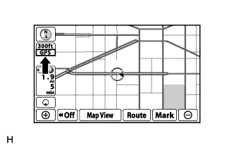
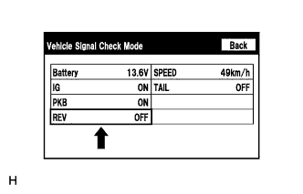

NAVIGATION SYSTEM (for DVD) > Vehicle Position Mark Deviates Greatly |
| 1.CHECK GPS MARK |
|  |
Check that the GPS mark is displayed.
|
| ||||
| OK | |
| 2.CHECK VEHICLE SENSOR (NAVIGATION CHECK MODE) |
 |
Enter the "Navigation Check" mode and select "Vehicle Sensors" (Click here).
While driving the vehicle, compare the "Speed" indicator to the reading on the speedometer. Check that these readings are equal or almost equal.
|
| ||||
| OK | |
| 3.CHECK VEHICLE SIGNAL (NAVIGATION CHECK MODE) |
|  |
Enter the "Display Check" mode and select "Vehicle Signal Check" (Click here).
Check that the display changes between ON and OFF according to the shift lever operation.
| Shift Lever Position | Display |
| Except R | OFF |
| R | ON |
|
| ||||
| OK | ||
| ||